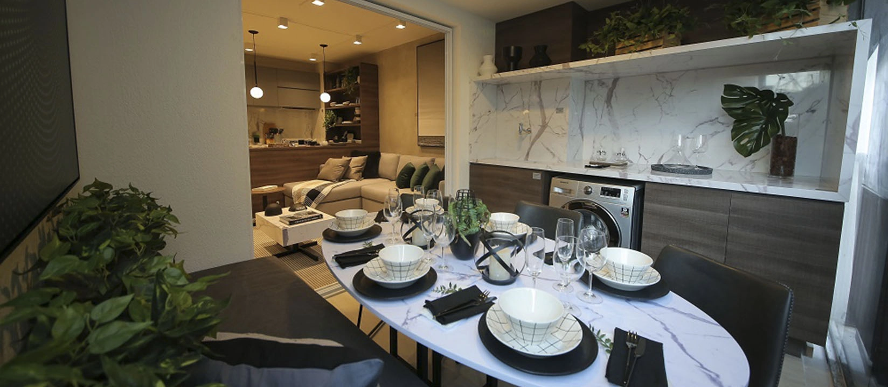
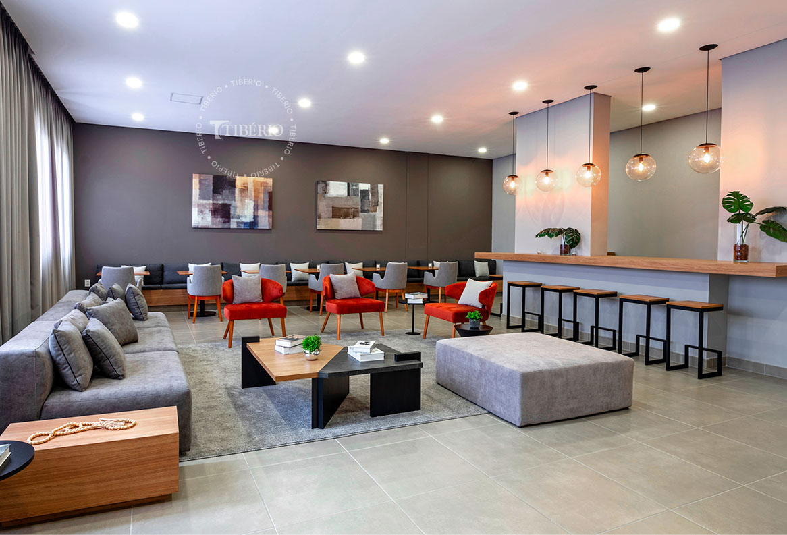

Constantino Campo Belo: Studios e Apartamentos de 2 e 3 Dormitórios
Conheça o Constantino Campo Belo da Tibério, empreendimento pronto para morar na Rua Constantino de Sousa, 258. São opções de studios e apartamentos de 2 e 3 dormitórios, a 700 metros do Metrô Eucaliptos e do Shopping Ibirapuera.
Conheça o Constantino Campo Belo da Tibério
O Constantino Campo Belo é um empreendimento residencial da Tibério, pronto para morar, localizado na Rua Constantino de Sousa, 258, no Campo Belo, Zona Sul de São Paulo.
O projeto reúne studios e apartamentos de 2 e 3 dormitórios, com opções de plantas entre aproximadamente 24 m² e 70 m². Entre as alternativas residenciais estão studios, apartamentos de 2 dormitórios com suíte e unidades de 3 dormitórios com suíte.
A localização é um dos destaques: o empreendimento está a aproximadamente 700 metros da Estação Eucaliptos da Linha 5-Lilás do Metrô e do Shopping Ibirapuera.
O condomínio conta com espaços de lazer, convivência e serviços, como piscinas, fitness, salão de festas, espaço gourmet, churrasqueira, coworking, lavanderia e áreas para pets.
CONDIÇÃO ESPECIAL DE PAGAMENTO
Consulte a condição de ato anunciada para o Constantino Campo Belo, as unidades participantes e o fluxo de pagamento vigente. Valores, condições e disponibilidade devem ser confirmados no atendimento.
Visite o apartamento decorado do Constantino Campo Belo

Conheça os ambientes do apartamento decorado
Veja de perto as possibilidades de aproveitamento dos ambientes, acabamentos e soluções de decoração do Constantino Campo Belo.
Entre em contato para confirmar as condições de visita e consultar a disponibilidade do decorado.
Galeria de fotos do Constantino Campo Belo
Confira imagens dos ambientes e espaços de lazer do empreendimento da Tibério no Campo Belo.




Apartamento de 3 dormitórios no Constantino Campo Belo
Uma das opções do empreendimento é o apartamento de 3 dormitórios, com aproximadamente 69,80 m² e uma suíte. A planta foi planejada para integrar os ambientes e oferecer espaço para a rotina familiar.
O Constantino também possui apartamentos de 2 dormitórios, com opções de plantas de aproximadamente 55,92 m² e 57,14 m², além de studios residenciais e unidades de serviço de moradia.
As características de varanda, vagas de garagem, acabamentos e demais itens podem variar conforme a planta e a unidade. Consulte as opções disponíveis antes de escolher seu apartamento.
Como é morar no Campo Belo, em São Paulo?
O Campo Belo é um bairro tradicional da Zona Sul de São Paulo, conhecido pela combinação de ruas residenciais, comércio, serviços e acesso a importantes regiões da cidade.
Quem procura apartamento no Campo Belo encontra supermercados, farmácias, restaurantes, padarias, academias, escolas e diferentes serviços para facilitar a rotina.
O Constantino Campo Belo está a aproximadamente 700 metros da Estação Eucaliptos da Linha 5-Lilás do Metrô, facilitando o deslocamento pela cidade. O Shopping Ibirapuera também fica a cerca de 700 metros do empreendimento.
A localização oferece ainda acesso às avenidas dos Bandeirantes e Vereador José Diniz, além de proximidade com bairros como Moema e Brooklin.
O Aeroporto de Congonhas também está a poucos minutos de carro, segundo a referência de localização divulgada pela construtora.
Ficha técnica do Constantino Campo Belo
| Empreendimento | Constantino Campo Belo |
| Construtora | Tibério |
| Status | Pronto para morar |
| Endereço | Rua Constantino de Sousa, 258 |
| Bairro | Campo Belo |
| Cidade | São Paulo – SP |
| Tipologias | Studios e apartamentos de 2 e 3 dormitórios |
| Metragens divulgadas | Aproximadamente 24 a 70 m² |
| Apartamento de 2 dormitórios | Plantas de aproximadamente 55,92 m² e 57,14 m² |
| Apartamento de 3 dormitórios | Aproximadamente 69,80 m² e uma suíte |
| Metrô | 700 metros da Estação Eucaliptos |
| Shopping | 700 metros do Shopping Ibirapuera |
Consulte as plantas, características, vagas, valores e disponibilidade de cada unidade.
Lazer e diferenciais do Constantino Campo Belo
O empreendimento reúne ambientes de lazer, convivência e serviços para diferentes momentos do dia a dia.
🏊 Piscinas
Piscinas adulto e infantil, com deck molhado e solarium.
🏋 Fitness
Espaço fitness e área externa para atividades físicas.
🐶 Espaço para pets
Área Dog Agility para atividades e convivência com animais de estimação.
🍽 Espaço Gourmet
Ambiente para encontros, refeições e confraternizações.
🔥 Churrasqueira
Espaço para reunir familiares e amigos.
🎉 Salão de Festas
Ambiente para celebrações e encontros.
💻 Coworking
Espaço de apoio para trabalho e atividades profissionais.
🧺 Lavanderia
Estrutura de lavanderia para facilitar a rotina dos moradores.
🧸 Playground
Área de lazer infantil para momentos de diversão.
Onde fica o Constantino Campo Belo?
O Constantino Campo Belo está localizado na Rua Constantino de Sousa, 258, no bairro Campo Belo, Zona Sul de São Paulo.
O empreendimento fica a aproximadamente 700 metros da Estação Eucaliptos da Linha 5-Lilás do Metrô e do Shopping Ibirapuera.
A região também oferece acesso às avenidas dos Bandeirantes e Vereador José Diniz, além de comércio, restaurantes, serviços e opções de transporte.
Está pesquisando outros apartamentos na região?
Ver apartamentos no Campo BeloPerguntas frequentes sobre o Constantino Campo Belo
O que é o Constantino Campo Belo?
É um empreendimento residencial da Tibério, pronto para morar, localizado na Rua Constantino de Sousa, 258, no Campo Belo, Zona Sul de São Paulo.
Quais são as tipologias do Constantino Campo Belo?
O empreendimento possui opções de studios e apartamentos de 2 e 3 dormitórios. Consulte as plantas e a disponibilidade atualizada.
Qual é a metragem dos apartamentos?
As metragens divulgadas pela construtora variam de aproximadamente 24 m² a 70 m², incluindo studios e apartamentos de 2 e 3 dormitórios.
Qual é a metragem do apartamento de 3 dormitórios?
A planta de 3 dormitórios divulgada pela construtora possui aproximadamente 69,80 m² e uma suíte.
Quais são as opções de apartamentos de 2 dormitórios?
O empreendimento apresenta plantas de aproximadamente 55,92 m² e 57,14 m², ambas com opção de suíte conforme a planta divulgada.
O Constantino Campo Belo fica perto do metrô?
Sim. O empreendimento está a aproximadamente 700 metros da Estação Eucaliptos da Linha 5-Lilás do Metrô.
O empreendimento fica perto do Shopping Ibirapuera?
Sim. A distância divulgada pela construtora até o Shopping Ibirapuera é de aproximadamente 700 metros.
Quais são as opções de lazer?
O condomínio possui piscinas, fitness, salão de festas, espaço gourmet, churrasqueira, coworking, lavanderia, playground e espaço para pets, entre outros ambientes.
O Constantino Campo Belo está pronto para morar?
Sim. O empreendimento é divulgado pela Tibério como pronto para morar.
Como consultar preços e disponibilidade?
Entre em contato pelo WhatsApp para receber informações atualizadas sobre plantas, valores, unidades disponíveis, condições comerciais e visita ao decorado.
Conheça o Constantino Campo Belo
Solicite plantas, tabela de preços atualizada, disponibilidade das unidades e condições de pagamento. Consulte também o agendamento de visita ao apartamento decorado.
💬 Falar com Sandro pelo WhatsApp